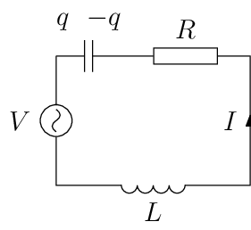
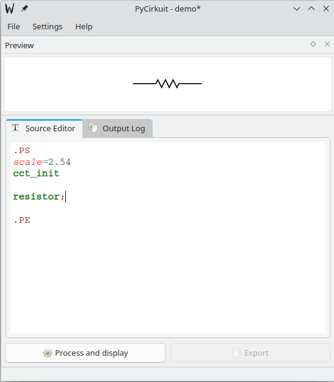
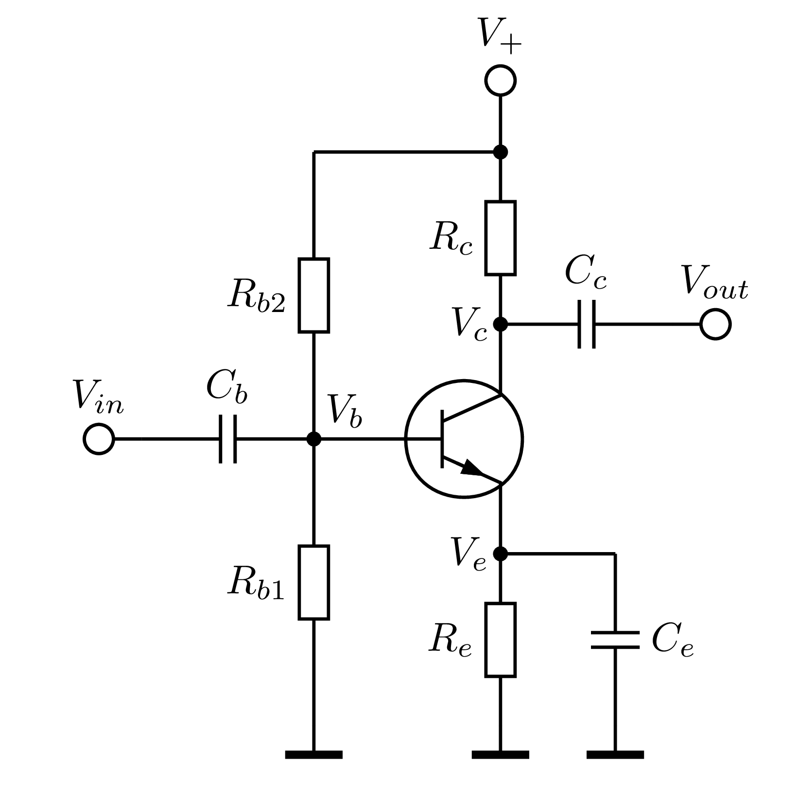

Elektronické zapojenia #
Elektrické schémy a zapojenia elektronických obvodov v grafickej podobe sú dôležitou formou komunikácie v technickej praxi. Pre značky elektronických komponentov sú vytvorené medzinárodne normy a tieto sú implementované v množstve návrhových systémov pre anávr a tvorbu elektronických systémov aj grafických programov pre ich kreslenie. V prostredí Sphinx pre zobrazenie elektronických zapojení môžeme použiť nasledujúce postupy:
Návrhové prostredia, napríklad Kicad, sú zvyčajne vektorové editory s možnosťou exportu zapojení v niekoľkých grafických formátoch. Zapojenie po exporte zobrazíme ako obrázok niektorým z popisaných postupov v kapitolách Rastrová a Vektorová grafika. Rovnako môžeme využiť aj univerzálne grafické programy, napríklad Inkscape, po doplnení vhodnými knižnicami komponentov.
Knižnica makier TikZ obsahuje knižnicu circuits pre kreslenie elektrických obvodov. Nadstavbou tejto knižnice pre zjednodušenie kreslenia je knižnica makier CircuiTikZ. Makrá na vytváranie zapojení môžu byť súčasťou zdrojového textu dokumentu alebo možu byť uložené v externom súbore.
Elektronické obvody môžeme vytvárať skriptami v špecializovaných prostrediach, ako je napríklad CircuitMacros, skripty môžu byť súčasťou zdrojového textu dokumentu.
TikZ circuits #
Knižnica circuits je štandardným rozšírením knižnice makier TikZ. V knižnici sú základné prvky pre kreslenie analogových a logických obvodov s možnosťou definovania vlastných prvkov. Popis knižnice je v dokumentácii. Rozšírenie knižnice komponentov a zjednodušenie vytvárania obvodov je implementované v knižnici CircuiTikZ.

Obr. 20 Zapojenie elektrického obvodu pomocou knižnice ciruits.
Zdrojový kód
```{tikz} Zapojenie elektrick0ho obvodu pomocou knižnice *ciruits*.
:xscale: 30
\usetikzlibrary{circuits}
\usetikzlibrary{circuits.ee.IEC}
\tikzset{circuit declare symbol = ac source}
\tikzset{set ac source graphic = ac source IEC graphic}
\tikzset{
ac source IEC graphic/.style=
{**
transform shape,
circuit symbol lines,
circuit symbol size = width 3 height 3,
shape=generic circle IEC,
/pgf/generic circle IEC/before background=
{
\pgfpathmoveto{\pgfpoint{-0.8pt}{0pt}}
\pgfpathsine{\pgfpoint{0.4pt}{0.4pt}}
\pgfpathcosine{\pgfpoint{0.4pt}{-0.4pt}}
\pgfpathsine{\pgfpoint{0.4pt}{-0.4pt}}
\pgfpathcosine{\pgfpoint{0.4pt}{0.4pt}}
\pgfusepathqstroke
}
}
}
\begin{tikzpicture}[circuit ee IEC]
\draw (0,0) to [capacitor={info={$q$\ \ $-q$}}] ++(1, 0)
to [resistor={info ={$R$}}] ++(2, 0)
to [current direction' = {info = {$I$}}]++(0,-2)
to [inductor={info=$L$}] (0,-2)
to [ac source={info={$V$}}] (0,0);
\end{tikzpicture}
```
Circuit Macros #
Prostredie CircuitMacros je súbor makier pre programovací jazyk dpic, ktorý bol pôvodne určený pre programové vytváranie jednoduchých diagramov. Vytváranie zapojení je intuitívne a rešpektuje špecifické vlastnosti elektronických obvodov ako je
absolútne a relatívne ukladanie komponentov
vetvenie elektrických obvodov vrátane vnorených vetiev
jednoduchý popis prvkov relatívne voči jeho rozmerom a polohe
odkazy na prvky obvodu v rámci celého zapojenia
možnosť tvorby odvodených a nových komponentov
Vytvorený obrázok môžeme exportovať v rastrovom formáte (*.png, *.jpg), vektorovom (*.svg, *.ps) alebo priamo v makrách TikZ.
Tvorba zapojení pomocou externého editora #
Elektrické zapojenia môžeme vytvárať pomocou jednoduchého prostredia PyCirkuit. Program je dostupný v štandardnom repozitári PyPI

Obr. 21 Editor PyCirkuit.#
V prostredí editora môžeme zadávať príkazy a makrá, pomocou ktorých kreslíme zapojenie. Vlastná syntax jazyka je podobná jazyku C, štruktúra programu má formou
.PS # zaciatok skriptu
scale = 2.54 # nastavenie dlzkovych jednotiek, d=1 -> 1cm
cct_init # inicializacia zakladnej kniznice
resistor(2,E); # makra a prikazy na kreslenie
...
.PE
Inštalácia
Tvorba zapojení v zdrojovom texte dokumentu #
Vytváranie zapojení pomocou CircuitMacros v prostredí Sphinx je mierne komplikovanejšie ako jednoduché volanie makier TikZ pomocou direktívy {tikz}. Zdrojový kód v syntaxi CircuitMacros je umiesnený v raw textovom reťazci a vo volaní pomocnej funkcie Pythonom odovzdaný na kompiláciu a vytvorenie obrázku.
{kind=link}

Obr. 22 Zapojenie vytvorené v prostredí CircuitMacros#
Zdrojový kód
```{code-cell} ipython3
:tags: ["remove-cell"]
from src.utils import *
data = r'''
include(lib_base.ckt)
include(lib_color.ckt)
move to (4,2)
up_;
T1: bi_tr(2, L, N,E);
resistor(from T1.E down_ 1.5,,E); rlabel(,R_e,);
GN: gnd;
RC: resistor(from T1.C up_ 1.5,,E); llabel(,R_c,);
DC: dot;
tconn(0.75,O); clabel(,,V_+);
line from T1.B left_ 0.8;
D1: dot; dlabel(0,0,,V_b,,AL);
resistor(from D1 down_ (D1.y - GN.n.y),,E); rlabel(,R_{b1},);
gnd;
resistor(from D1 up_ (RC.end.y - D1.y),,E); llabel(,R_{b2},);
line to DC;
capacitor(from D1 left_ 1.5); rlabel(,C_{b},);
tconn(0.5,O); rlabel(,V_{in},);
move to T1.C;
D2: dot; dlabel(0,0,,V_c,,R);
capacitor(from D2 right_ 1.5); llabel(,C_{c},);
tconn(0.5,O); llabel(,V_{out},);
move to T1.E;
D3: dot; dlabel(0,0,,V_e,,R);
line right_ 1;
capacitor(down_ 1.5); llabel(,C_{e},);
gnd;
'''
_ = cm_compile('cm_demo_01', data, dpi=600 )
```
Zdrový text zapojenia
Umiestnenie skriptov pre vytváranie zapojení priamo do zdrojového textu dokumentu značne zjednodušuje úpravy zapojení na základe zmien textu dokumentu bez potreby generovania obrázkov v externých programoch.